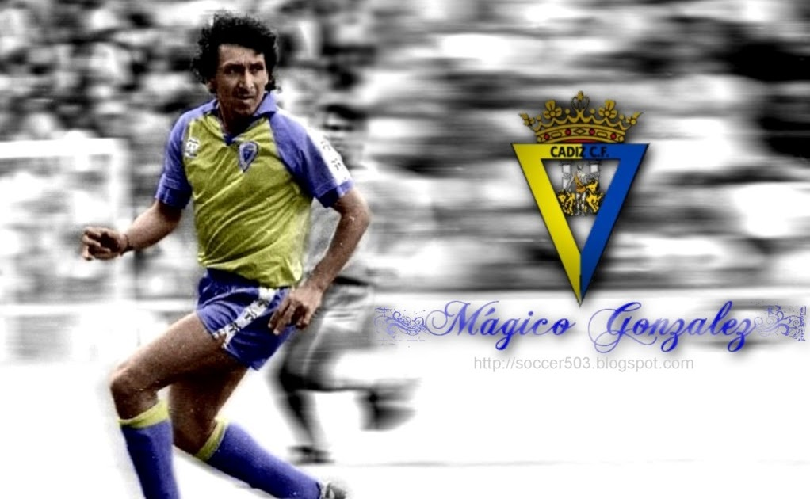
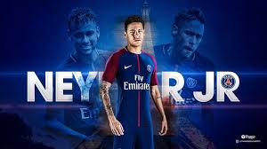
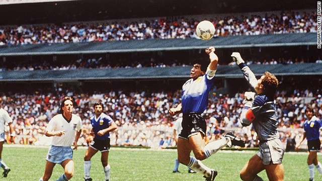

Mejores Jugadas
En esta sección podrás encontrar las mejores jugadas de los mejores jugadores del mundo.
Mejores jugadas de Mágico González
Jorge "Mágico" González es un Salvadoreño que jugaba en el Cádiz CF, el que ha hecho que el club ascienda en varias ocasiones y el que ha rechazado equipos de la talla del FC Barcelona o el Real Madrid. Ya en su día Diego Armando Maradona dijo que sí había un jugador mejor que él, que era Salvadoreño y jugaba en el Cádiz CF.
En la siguiente imagen tienes un vídeo con algunas de sus jugadas. (Haz click en la imagen)
Mejores jugadas de Neymar JR
Neymar JR es un futbolista con demasiada magia, que nos trae muchsísimos recuerdos a lo que fue Ronaldinho, aunque en mi opinión nadie nunca hasta ahora ha igualado o superado en magia a Ronaldinho.
En la siguiente imagen tienes un vídeo con algunas de sus jugadas. (Haz click en la imagen)
Mejores jugadas de Maradona
Diego Armando Maradona es un mítico futbolista argentino del que todos hemos oído hablar alguna vez. Este pasado año tristemente falleció, pero nos ha dejado un gran contenido de vídeos de los que podemos disfrutar viendo.
Maradona también nos dejó en su legado la maravillosa "mano de dios" que le metió a Inglaterra en el mundial de 1986, puedes ver la imagen debajo.
En la siguiente imagen tienes un vídeo con algunas de sus jugadas. (Haz click en la imagen)
